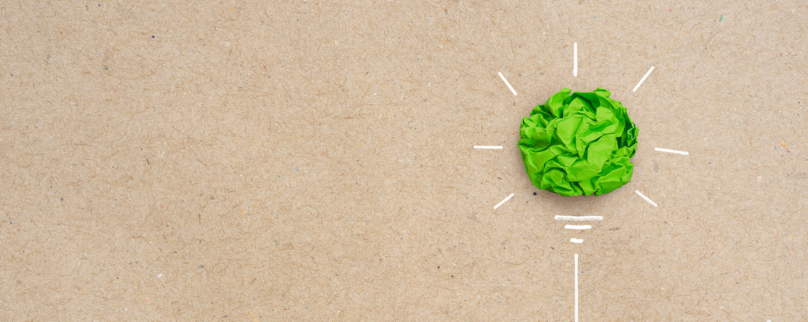

We as qiio take full responsibility for our social and environmental impact.
As a company and in our everyday business we practice sustainability and pledge to apply better practices to
protect the environment.
We do this by innovating our processes, reducing our waste, by using more environmentally friendly materials
or actively using more secondary materials as well as by embracing energy saving methods.
In addition, we limit our travel to a minimum and always compensate our CO2 flight emissions.
We, as a company and as employees are committed to taking care of our environment and finding ways of giving
back and contributing to society.